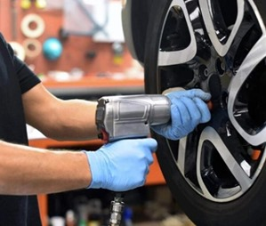
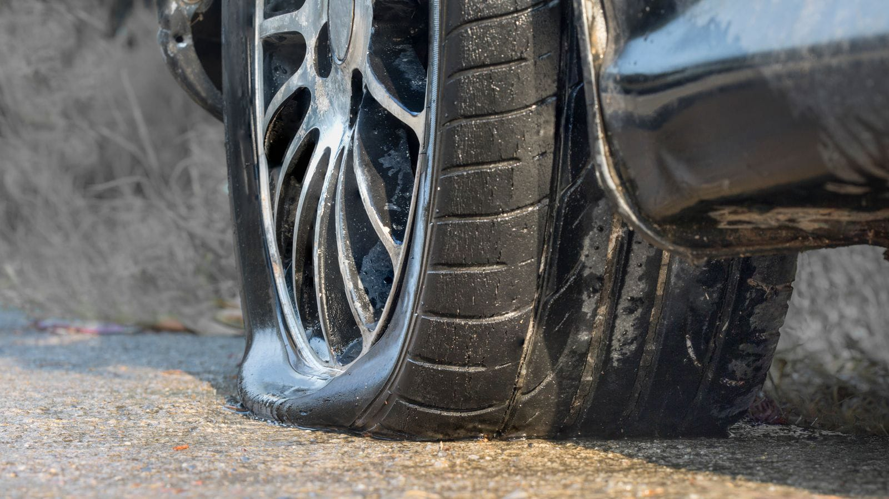
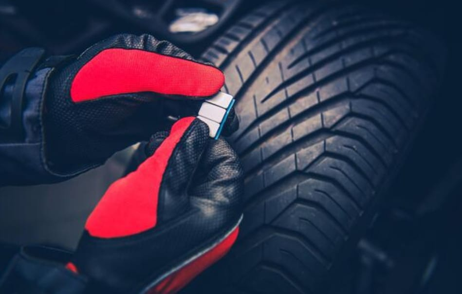
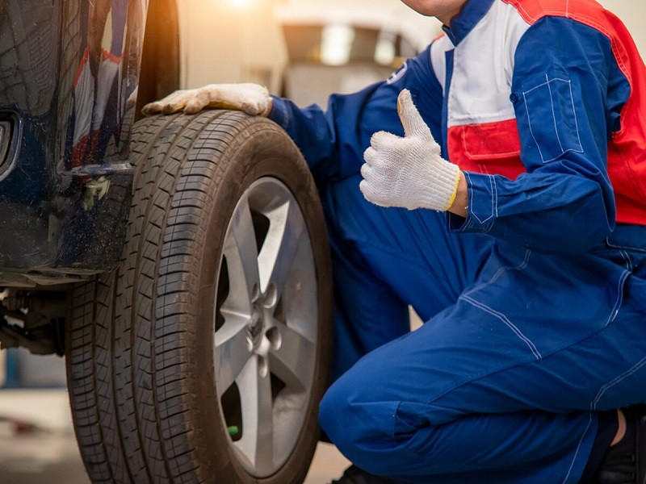
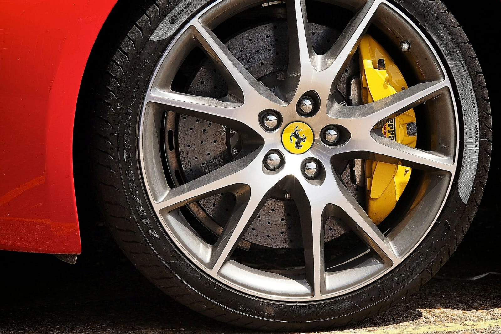
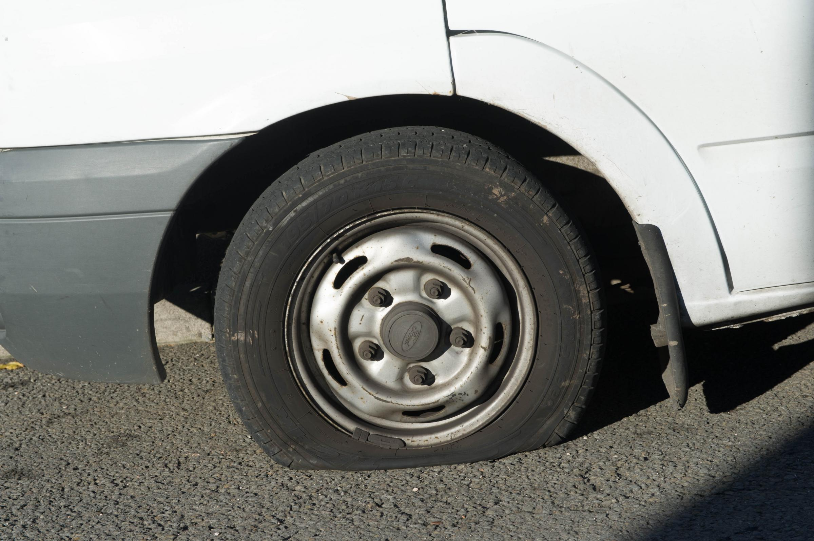

Services
Manchester Tyres/Services
Services
Manchester Tyres/Services that Matter

tyre replacement

Puncture Repair

Wheel Balance

24/7 Emergency Fitting
Our dedicated emergency tyre fitting crew is ready to install tyres at your convenience, whether
it's at your residence, workplace, roadside, or even on a motorway hard shoulder. Staffed by
trained specialists and equipped with full gear, we are prepared to come to your location at any
time that suits your schedule.

Locking Wheel Nut Removal
In the event of a lost or damaged locking wheel nut key, there's no need to worry. Our skilled
team is ready to provide assistance. Proficient in the removal of a wide range of locknuts used
by various car manufacturers, we're here to help. Reach out to us today to explore the solutions
we offer for your specific needs.

Van Tyres